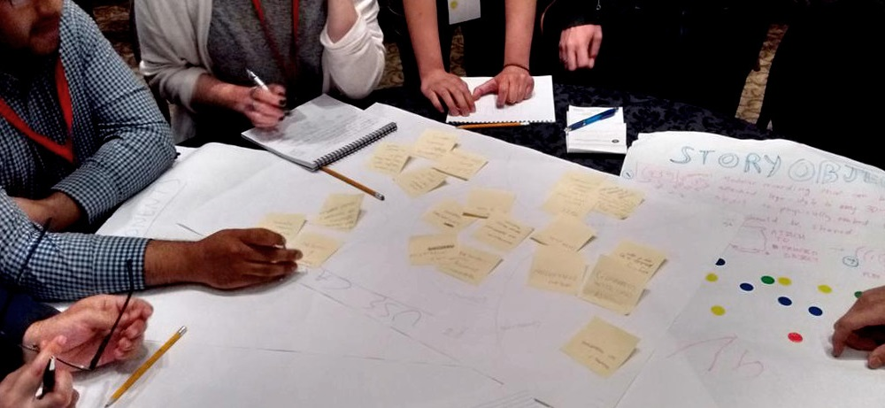

Story Artifacts
Bringing your stories to the people who need to hear them.
Our team came together at the Kitchener-Waterloo PCH Hardware Hackathon around a vision of helping people share memories and experiences using collectively-created storytelling objects.

demo